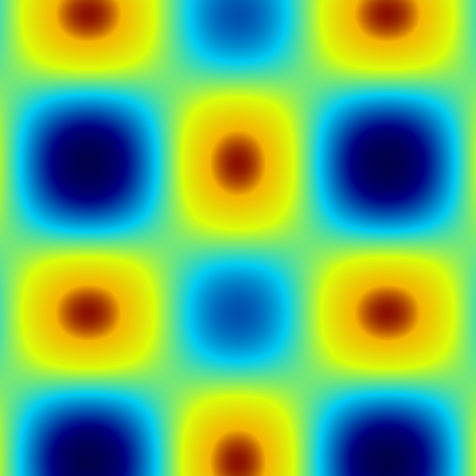

Illustrate how to plot a 2D function (an image) y=f(x,y) on the GPU.
from vispy import app, gloo
vertex = """
attribute vec2 a_position;
varying vec2 v_position;
void main()
{
gl_Position = vec4(a_position, 0.0, 1.0);
v_position = a_position;
}
"""
fragment = """
const float M_PI = 3.14159265358979323846;
uniform float u_time;
varying vec2 v_position;
/**********************************************************
Specify the parameters here.
**********************************************************/
const float z_offset = 1.; // (z+z_offset)/z_max should be in [0,1]
const float z_max = 2.;
const float x_scale = 5.; // x is between -x_scale and +x_scale
const float y_scale = 5.; // y is between -y_scale and +y_scale
const float t_scale = 5.; // scale for the time
/*********************************************************/
float f(float x, float y, float t) {
// x is in [-x_scale, +x_scale]
// y is in [-y_scale, +y_scale]
// t is in [0, +oo)
/**********************************************************
Write your function below.
**********************************************************/
float k = .25*cos(t);
return (cos(x)+k)*(sin(y)-k);
/*********************************************************/
}
vec4 jet(float x) {
vec3 a, b;
float c;
if (x < 0.34) {
a = vec3(0, 0, 0.5);
b = vec3(0, 0.8, 0.95);
c = (x - 0.0) / (0.34 - 0.0);
} else if (x < 0.64) {
a = vec3(0, 0.8, 0.95);
b = vec3(0.85, 1, 0.04);
c = (x - 0.34) / (0.64 - 0.34);
} else if (x < 0.89) {
a = vec3(0.85, 1, 0.04);
b = vec3(0.96, 0.7, 0);
c = (x - 0.64) / (0.89 - 0.64);
} else {
a = vec3(0.96, 0.7, 0);
b = vec3(0.5, 0, 0);
c = (x - 0.89) / (1.0 - 0.89);
}
return vec4(mix(a, b, c), 1.0);
}
void main() {
vec2 pos = v_position;
float z = f(x_scale * pos.x, y_scale * pos.y, t_scale * u_time);
gl_FragColor = jet((z + z_offset) / (z_max));
}
"""
class Canvas(app.Canvas):
def __init__(self):
app.Canvas.__init__(self, position=(300, 100),
size=(800, 800), keys='interactive')
self.program = gloo.Program(vertex, fragment)
self.program['a_position'] = [(-1., -1.), (-1., +1.),
(+1., -1.), (+1., +1.)]
self.timer = app.Timer(1.0 / 60)
self.timer.connect(self.on_timer)
self.timer.start()
def on_timer(self, event):
self.program['u_time'] = event.elapsed
self.update()
def on_resize(self, event):
width, height = event.size
gloo.set_viewport(0, 0, width, height)
def on_draw(self, event):
self.program.draw('triangle_strip')
if __name__ == '__main__':
canvas = Canvas()
canvas.show()
app.run()